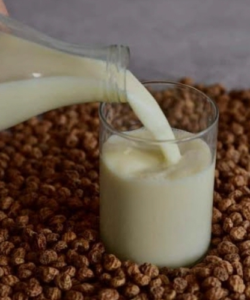

Delicious Tigernut drink

My recipe to make Delicious Tigernut drink for the family
Tigernut drink is a popular beverage in many West African countries. Here's a simple recipe to make a delicious Tigernut drink.
Ingredients:
- 2 cups of tigernuts
- 4 cups of water
- 1/4 teaspoon of ground ginger
- 1/4 teaspoon of ground cinnamon
- 1/4 teaspoon of ground cloves
- 1 tablespoon of honey or sugar (optional)
Procedure
- Rinse the tigernuts and soak them in water for at least 8 hours or overnight.
- Drain and blend the soaked tigernuts with 4 cups of water until smooth.
- Strain the mixture through a cheesecloth or a fine-mesh sieve into a bowl.
- Add the ground ginger, cinnamon, and cloves to the mixture and stir well.
- If desired, add honey or sugar to taste.
- Chill the mixture in the refrigerator for at least 2 hours.
- Serve the Tigernut drink cold, garnished with a sprinkle of cinnamon or a few tigernuts.
Enjoy your refreshing Tigernut drink!